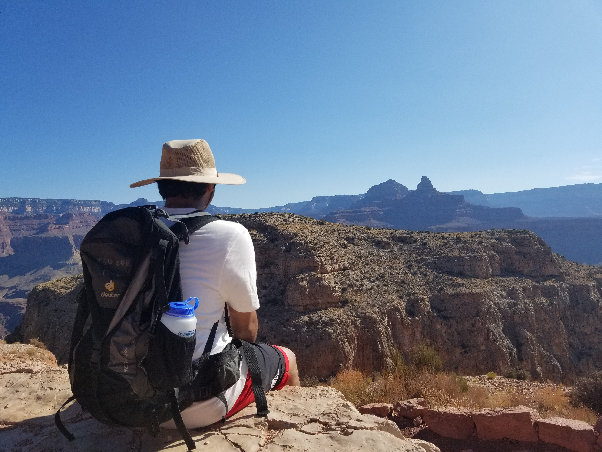
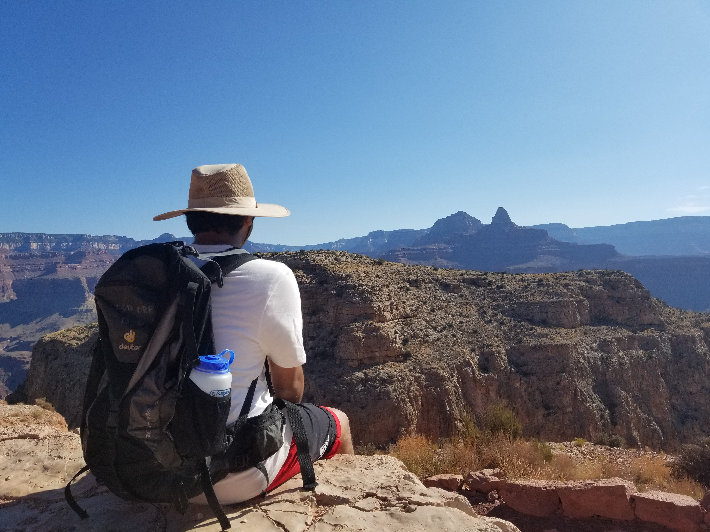
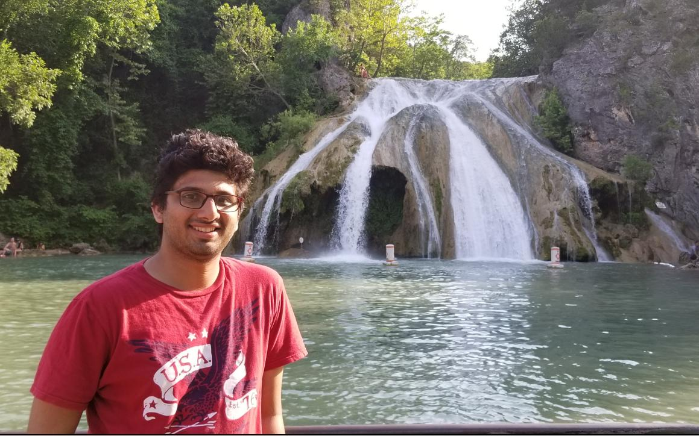
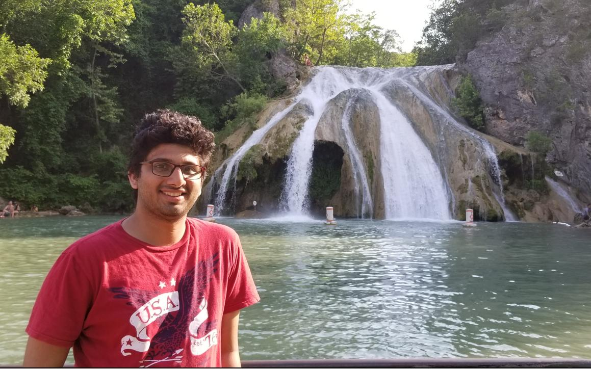

Travelling
I'm an avid traveller and a nature-lover who tries to explore various national parks
Hiking/Backpacking
Hiking/Backpacking is my favorite activity in any nature trip as it gives me a chance to explore the beauty of a place from all corners
 


Nature
“Adopt the pace of nature: her secret is patience” -- Ralph Waldo Emerson
 

Acquariums
Bucket List
Yosemite National Park, CA Yellowstone National Park, WY Pikes Peak, CO